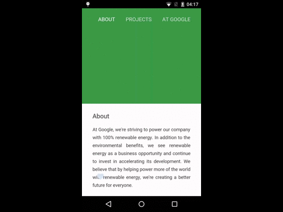
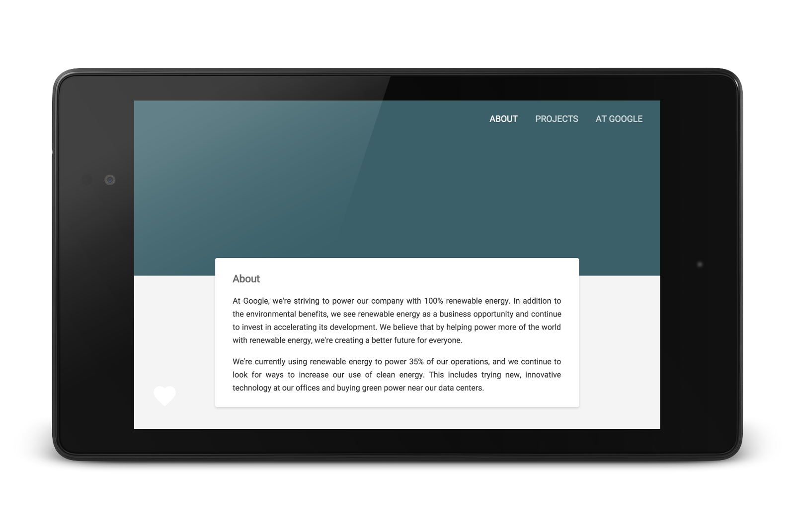
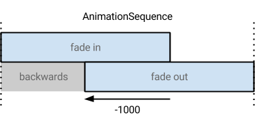

In this codelab, you’ll learn how to use the Web Animations API to enhance a single-page HTML website. You'll add transitions between content, and use animations to support an effect based on the scroll position of the page.
The final site will run amazingly on both desktop and mobile, in all modern browsers. Check out this preview:

You can either download all the sample code to your computer...
...or clone the GitHub repository from the command line.
$ git clone https://github.com/googlesamples/io2015-codelabs.git
Let's first take a look at the sample site that we're going to animate. This is a simple site with a few different tabs.

web-animations/start folder.index.html file in your browser.That's it! Our base site is very simple, but has some boilerplate CSS, and JavaScript to manage showing and hiding the different sections. If you're curious about this boilerplate code, it lives in the web-animations/shared folder. In this codelab, we won't modify it at all.
If you'd like to open the final version of the site to see what you'll be building, you can find the code in the web-animations/step4 folder. It contains the entire codelab including the optional step.
The Web Animations API is a suite of primitives and features, some of which may not yet be available natively in your favourite browser. Let's get started by including the web-animations-next polyfill. This is a JavaScript implementation of the Web Animations API that's supported on all modern browsers, and it's good practice to include it unless you're very confident about the browsers of your users.
In this codelab, we'll work within the web-animations/start folder.
Open the web-animations/start/index.html file in a text editor, and include web-animations-next.min.js from GitHub as shown below.
web-animations-next.min.js script from a checked out polyfill repoweb-animations-js, version 2.0.0 or later.The Google I/O 2015 site has a striking visual effect when you load different pages. It creates a colored circle from the link that expands to fill the whole header. It's subtle, but effective. Let's replicate that effect for our demo site.
Open the site.js file. The shared codelab.js file (which you won't modify in this codelab) will call a function named animateToSection when a user loads a new section, and we've provided this as boilerplate here for you. However, it doesn't do anything just yet.
Inside this function, we're going to first create a new DOM element, and position it over the clicked link. To do that, insert the following code into animateToSection:
We also need to define the circleEffect class. Open up site.css—this is intentionally blank to start with—and let's make something resoundingly round. We use the 'vw' (viewport width) units to make sure the circle is always larger than the width of the screen, and use a margin to position it perfectly centered.
Now, it's time to get colorful, choosing a new color to go to, not to mention animated - we'll create an Animation player that scales the circle from zero to hero by changing the CSS transform property. Append this code at the end of the animateToSection method:
And that's it! Try it out now by loading different parts of the demo site.
This code randomly chooses a new color, applies it to the effectNode, and then animates it through the defined steps in scaleSteps. When that Animation is finished, it removes the node (good to clean up, otherwise you'll end up with lots of DOM) and sets the header to always have that new color.
The completed code for this step is available in web-animations/step1.
Another great effect from the I/O site shows page content fade in as different parts of the site are loaded. Let's replicate that effect. We'll again be modifying only the animateToSection method inside site.js.
In the previous step, we created an Animation player by calling the animate method on our effectNode. This is a great shorthand, but is limited to controlling a single effect. In Web Animations, we can group together multiple effects and control them with a single player. Replace the effectNode.animate line with this code:
This creates a KeyframeEffect that encapsulates our change to effectNode, without implicitly playing the animation before we're ready. It then creates a GroupEffect which will play all effects—just one for now—inside allEffects in parallel.
Let's add another effect that fades in the new content. First, add a new method at the end of this file that creates a 'fade-in' effect on a generic target:
And then, compose this effect inside the allEffects array:
If you load the page now, you'll see the content quickly slide in (and bounce, thanks to the cubic-bezier easing function) timed along with the ripple effect.
The completed code for this step is available in web-animations/step2.
Let's combine this with a fade out effect for the previous content, but with a literal twist. It's going to randomly dismiss the previous section in a certain direction and angle. We're going to build this animation in the same way as before - first, add a new method to site.js to build a custom and random dismiss effect:
Then, as before, we're going to compose this effect. However, instead of running the effects in parallel, let's perform one after the other using SequenceEffect:
We're almost there, but if you were to run the effect now, you would see the new page content in its final state (i.e., visible and static) before the animation created in buildFadeIn plays. In the Web Animations API, this is by design - the API doesn't know what should happen to your properties before or after an animation plays. Let's update the timing passed to the KeyframeEffect constructor inside buildFadeIn:
The most important change here is the addition of fill: 'backwards'. This tells the API that you want the effect to apply (in this case, making the now-selected tab have a zero opacity) as soon as the animation is added to the page, even if it hasn't started playing yet, which is perfect for our delayed animation.
We've also hinted to this animation that it should start one second in the past - this means it will start somewhere in the middle of the fade out animation we've just added - creating an even more immersive effect.

The completed code for this step is available in web-animations/step3.
An Animation normally plays forward, transitioning from state A to state B. However, the Web Animations API is very versatile - instead of playing forward, we could use the currentTime property to 'scrub' an animation based on some external input.
For this optional extension, let's animate the small heart icon—hiding in the bottom left of the page. At the end of site.js, add an event listener to run when the page is ready, which will contain our new behavior:
This creates an animation effect, as we built before. However, it only runs for 1ms—hardly enough time to see the color and scale change!
However, let's not actually have the animation play forward. First, we're going to find the ratio of the user's viewport position on the page, which will be a number in the range [0,1]. Since our animation only goes for 1ms, we can use this number to control the currentTime property.
Append the following code at the end of the function:
Great! The currentTime will change from zero to one, depending on the user's scroll position. When you're testing this out, make sure you drag your browser's scroll bar to experience a perfectly smooth effect.
The completed code for this step is available in web-animations/step4.
You've used the Web Animations API to create perfectly composed visual transitions between pages in a site, and learned about the versatility of the Animation player object.
Element.animate
KeyframeEffect constructorGroupEffect and SequenceEffect
Animation to provide a timelineWeb Animations is not perfect for every animation - sometimes, you should use declarative CSS animations or procedural animations via requestAnimationFrame. However, it's a perfect addition to your toolbox and it's available for use in all modern browsers right now.